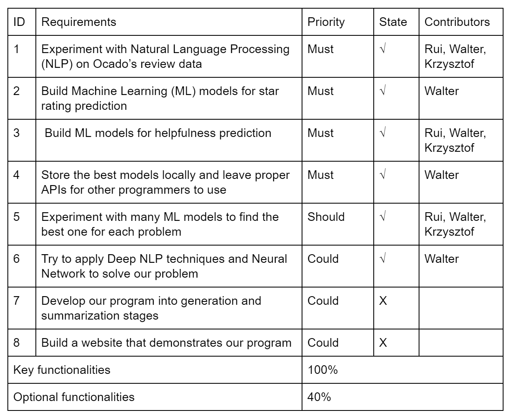
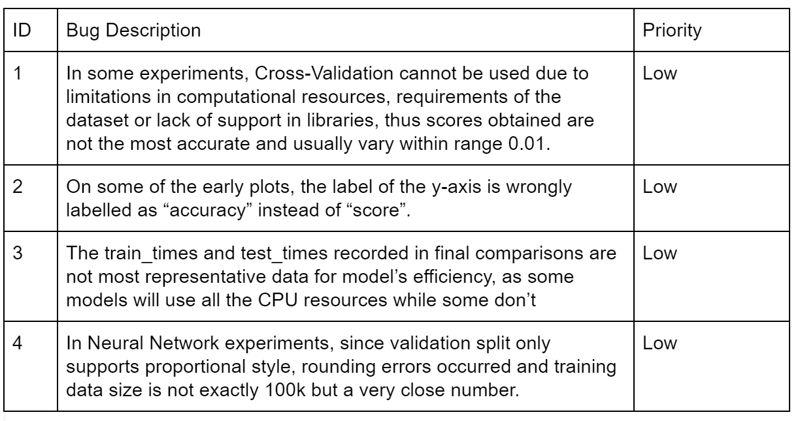
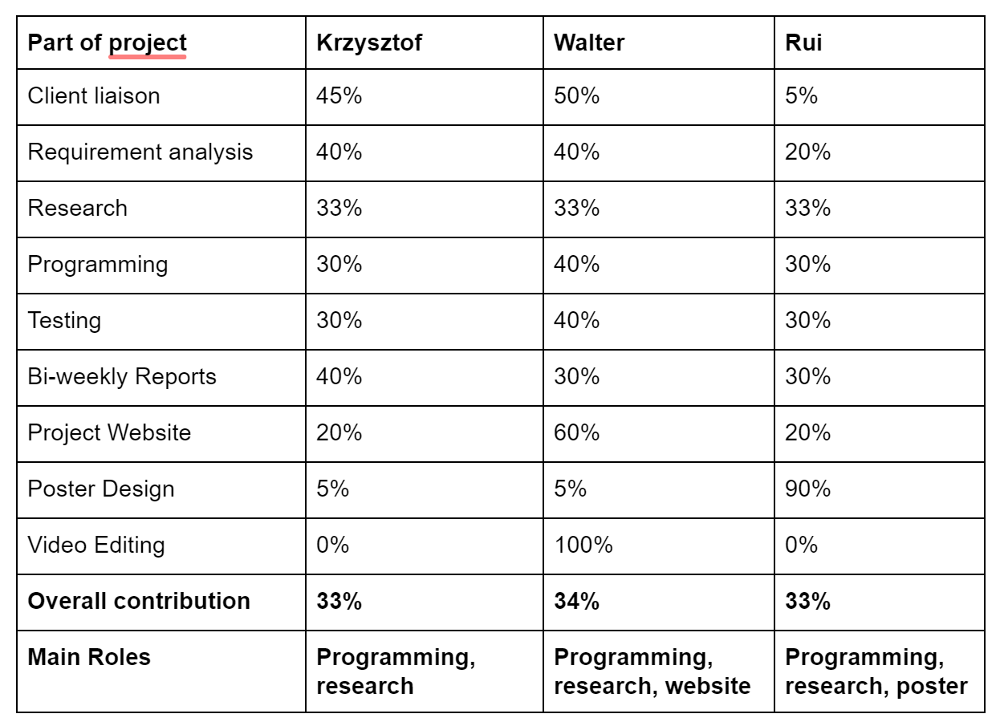

Summary of Achievements
MoSCoW table:

Known Bug List

Individual Contribution Table

Critical Evaluations
Functionality
We’ve designed a python module containing a ReviewAnalyser class that can be called to use the best models we’ve found to solve each problem. Its functionalities cover all you need to predict rating and helpfulness -- you can train new models either from direct input or CSV file, store them locally, read local storages into memory and use the models to do star rating and helpfulness prediction.
Reproducibility/Stability
As an important part of our project, we have produced many research notes recorded in Jupyter Notebooks. However, they’re not exactly reproducible -- it’s difficult to run all the experiments again and get exactly the same result (the overall results and conclusions drawn from the experiments would still be correct, but the numbers and details of plots may vary).
This is due to two reasons. First, running everything again would simply take too long, as many of our experiments are complicated require a lot of computational resources. Second, we decided not to fix a random state for all the models and data splittings. I.e., every time the experiments are run, different data will be used and models will be initialized with different parameters or weights. We made this decision because we want to demonstrate the unstableness in our models and eventually use them as an important part of evaluation as well.
Efficiency and Maintainability
Since our code base is very simple, it’s very efficient to run and maintain. In addition, it is well documented so anyone can use and modify the code without any trouble.
Project management
This project is well managed. We made our plans ahead and allocated different tasks to individuals. We also set deadlines for each other and made sure everyone was on the same page.
Future Work
We’d like to try many new things with this project if we had more time.
- Running more experiments. Due to hardware limits and time complexity, we were not able to experiment with all possible combinations of hyperparameters. Instead, we found the optimal value for on hyperparameter and assumed it would work best even if other hyperparameters have changed. If we had more time and better machines, experimenting with all combinations rough Random Search Cross-Validation or Grid Search Cross-Validation (for features) might produce more accurate results.
- Testing more models on helpfulness problem. Since classification is more popular than regression in ML, and our data for review helpfulness contain many noise samples, we decided to put more time and effort into star rating classification problem instead. With more time, we could develop more on the helpfulness problem and apply techniques such as Convolutional Neural Network and Word Embedding on it.
- Learning and applying more models. There are still many powerful ML models that we haven’t tried, such as Supported Vector Machine, Recursive Neural Network etc. We’d love to learn and use them to solve our problems.